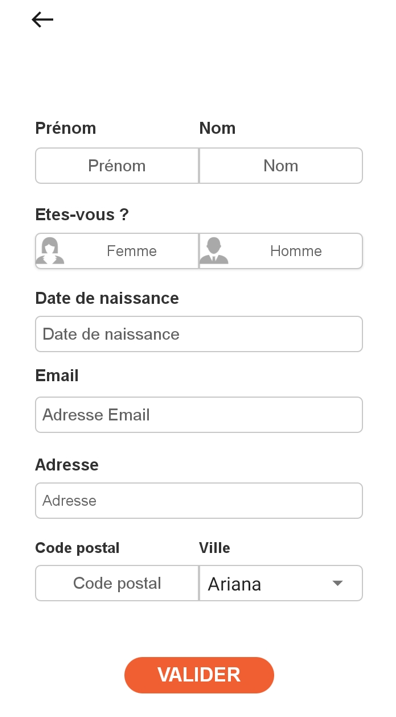
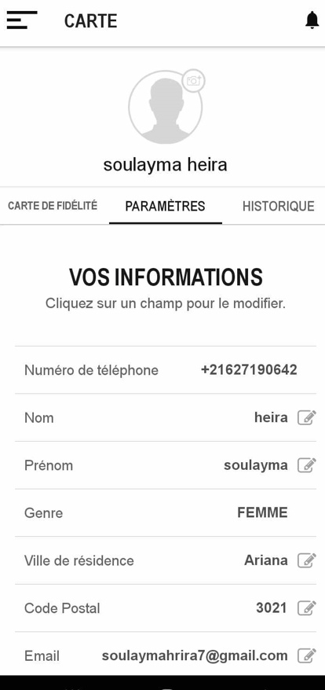

Portfolio
Stages
Automatisation du Web Scraping et Surveillance des Données en Temps Réel
02/2024 - 05/2024 - X-Lainer
- Implémentation d'un système automatisé de scraping pour les plateformes d'E-learning.
- Utilisation de Scrapy, Selenium et Playwright pour développer des spiders optimisés pour l'extraction quotidienne de données précises.
- Surveillance en temps réel du processus d'extraction avec les outils ScrapeOps pour garantir la fiabilité et la qualité du processus de scraping.
- Analyse des données et création d'un tableau de bord dynamique et interactif avec Streamlit pour la visualisation en temps réel des données extraites.


Application Mobile Carte de Fidélité
07/2023 - 08/2023 - X-Lainer
- Conception et développement de l'application avec Flutter (Dart).
- Utilisation de Firebase Realtime Database pour la gestion de la base de données.

